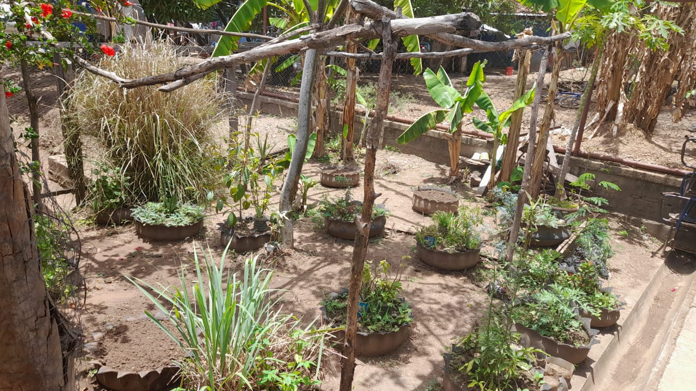
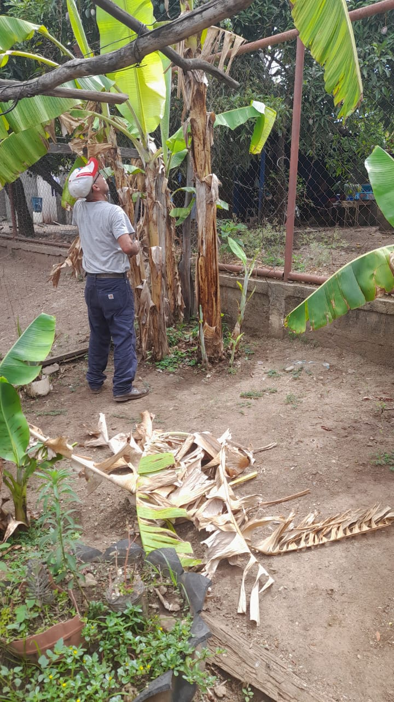
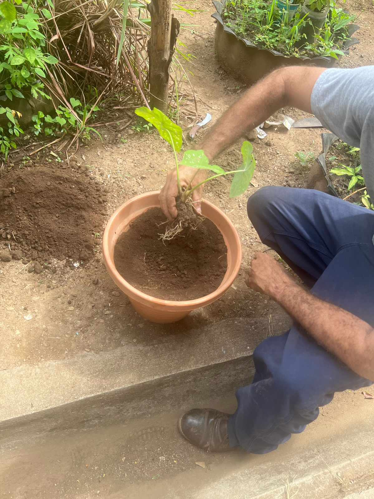

Reforestación en la Comunidad Verde
En Eco Guardianes NORA ASTORGA, nuestro proyecto más reciente ha sido la reforestación de 500 árboles nativos en la Comunidad Verde. Este esfuerzo busca combatir el cambio climático, mejorar la calidad del aire y preservar la biodiversidad local.
La iniciativa involucró a más de 200 voluntarios de la comunidad, quienes trabajaron juntos para plantar especies como robles, ceibas y pinos. Además, implementamos un sistema de riego sostenible utilizando agua recolectada de lluvia, asegurando el crecimiento saludable de los árboles.
Escribir aquí más detalles del proyecto.
Detalles finales del proyecto.
Este proyecto no solo beneficia al medio ambiente, sino que también fortalece los lazos comunitarios y promueve la educación ambiental. ¡Únete a nosotros en nuestra próxima jornada de reforestación!